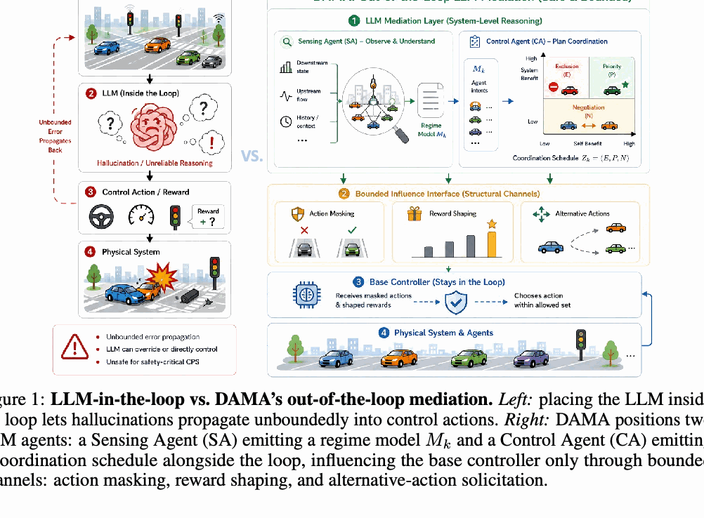
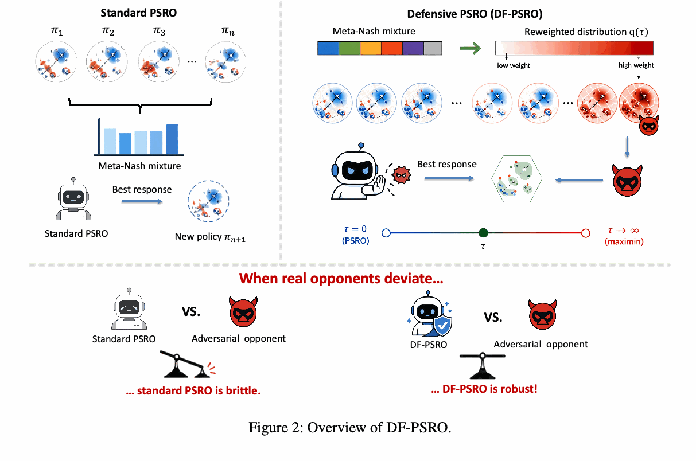
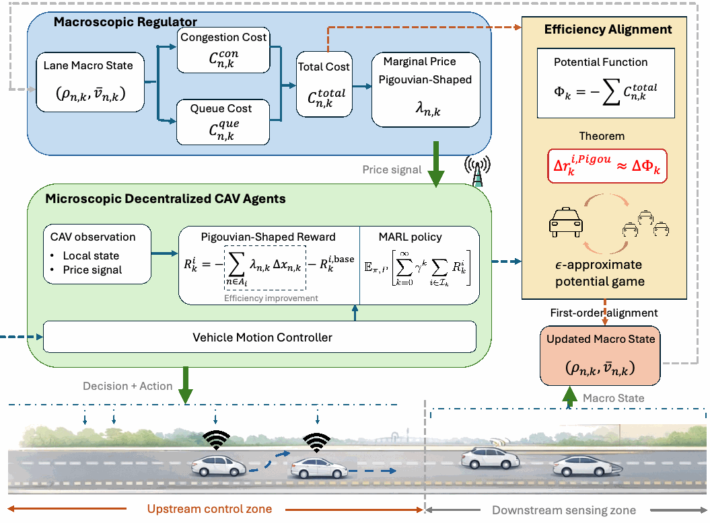
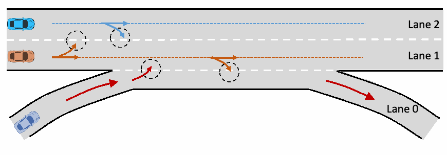
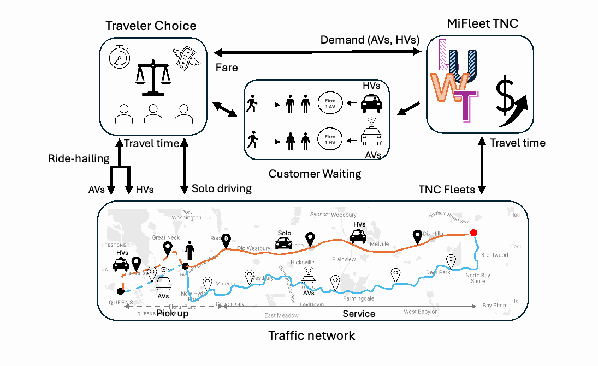
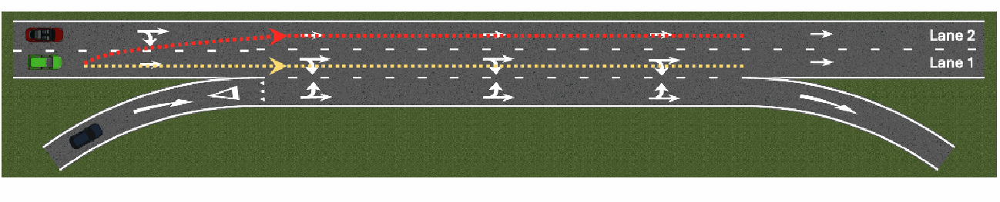

Out of the Loop: Bounded LLM Mediation for Cyber-Physical Control
Under review, NeurIPS 2026
A dual-agent LLM mediation architecture that coordinates cyber-physical agents through bounded action masking and reward shaping.
Hi! I am a first-year Ph.D. student in Civil Engineering at the University of Southern California, advised by Prof. Ruolin Li. My research lies at the intersection of multi-agent learning, game theory, and LLM-based decision making for cyber-physical systems.
I am especially excited about macro-micro agent systems: how a system-level coordinator can shape many local agents, and how local agent behaviors feed back into global dynamics. My current projects include bounded LLM mediation for cyber-physical control, defensive population learning for competitive autonomous ride-hailing, and macro-micro reinforcement learning for mixed-autonomy mobility.
Currently thinking about: macro ↔ micro agents LLM-mediated control multi-agent RL game-theoretic learning
Email: kwang255@usc.edu

Under review, NeurIPS 2026
A dual-agent LLM mediation architecture that coordinates cyber-physical agents through bounded action masking and reward shaping.

In preparation, AAAI 2026
A defensive population-based learning framework for robust decision-making against off-equilibrium competitive strategies.

Under review, IEEE Conference on Decision and Control (CDC 2026)
A macro-micro MARL framework where lane-level Pigouvian signals coordinate decentralized CAV agents.

Under review, Transportation Science
A Stackelberg-Wardrop framework for strategic autonomous agents shaping equilibrium behavior.

Under review, Transportation Research Part B
A network equilibrium model for mixed AV/HV ride-hailing fleets, customer waiting, and platform decisions.

IEEE ITSC 2025
A Wardrop-equilibrium formulation of aggregate lane-choice behavior for mainline vehicles at highway weaving ramps.